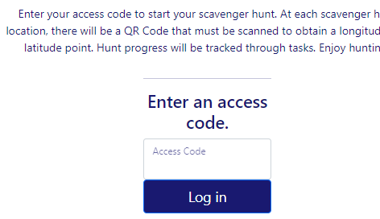

This project was just a personal project to learn more with ASP.NET. All it is is a simple web app that allows users to create DnD characters, and perform all CRUD operations on them. It was a lot of fun learning more about how to use authenication for this project. It just uses simple user accounts with the default templates in ASP.NET and are just stored in the SQLite database that is included with the application.
I went into this project with the same idea as the project above this, but I wanted to recreate it in Django so I can learn the framework more. At the time of writing, it is still very simple on the frontend, and only admins can add the characters, but I'm still proud of what I have accomplished so far as I never used Django before!
This project was for my Software Engineering 2 class. It was basically the same as my SE1 class that is described below, we were put into teams and we had to follow the scrum practices while following the agile principles while working on a project. This project we were able to chose from two options, our team chose the option to create a web app that was for games for ETSU students to play. The app features simple browser games that are playable on mobile devices. We also implemented a simple authenication feature where you had to enter an ETSU email to access the games. The app did require a microservice to run with it to get game data. The microservice wasn't exactly needed, but we made it because it was a requirement for the class and we had to practice it with the project. We also practiced deploying with this project and used pipelines for automated deployment. We deployed it on AWS with docker containers and were even able to get https working with a domain one of the group members owned!
What was used for this Project:
C#, ASP.NET 6.0
AWS
Docker
Here is a link to the gitub repository for the project:
BucStop application
Here is a link to the microservice:
Microservice
BucHunt

This project was a very interesting project from school in my Software Engineering 1 class. For the final project of the semester, we were put into teams and we had to follow the scrum practices while following the agile principles while working on a project. The assignment given to us was a scavenger hunt application that was themed for our university to have players locate buildings on campus. We also were given an existing project from one of the teacher's previous classes semesters, so we had to learn the codebase and then add more features based on the requirements given to us. It was an interesting experience but I definitely learned a lot from it and got to work with a lot of people on the project!
This project was for my CSCI-1210 class where we had to make a website for a client of our choice. In my group, no one had any suggestions so I suggested we make a website for my girlfriend and her art projects. This class was an intro to HTML and CSS so the design of the site was very simple and clunky, but it shows the difference between now and then so I wanted to include it!
To note my contributions to this project, I made the bio and mission statement pages along with the CSS for it. We had someone who was already a junior web developer in our group so there is also some Javascript and PHP as well. For example, one JavaScript method he made was to select a random piece of artwork to display on the index page. He also tried to make some implementations of a contact page if it was hosted a real website, so it was really nice to be exposed to this early on!
Languages used:
HTML
CSS
Here is a link to the gitub repository for the website:
CSCI-1210 Final